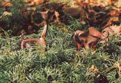
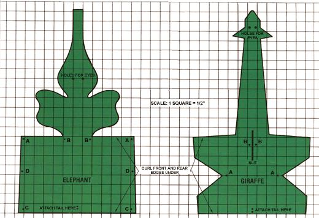

Transform leather scraps into a mini-menagerie... for the enjoyment of young and old alike!
The little leather creatures I make for my daughter have provided her with hours of playtime fun. I patterned my creations after some similar animals-which I saw on display in a gift shop-that had been handmade in India and were thus pretty costly. However, anyone with a few basic leatherwork materials and tools (all of which are available at most craft stores) can easily duplicate my efforts.
Before you begin, you'll need to gather together the following items: a sharp knife (either a tool especially made for use on leather, or an X-acto-type knife, or some other heavy-duty cutting implement) . . . a sturdy, large-eyed sewing needle ... some waxed cotton or linen thread . . . a rotary punch or an awl . . . leather dye in a color of your choice, plus cotton cloth to spread the dye . . . and, finally, the leather itself (five- to seven-ounce hide holds its shape best).
When drawing a pattern, keep in mind that the end product should be a stylized-rather than a realistic-representation of the animal. Practice cutting patterns out of paper and folding them until you find a shape that works. To begin with, however, you may want to try one or both of the animals pictured here.
STEP BY STEP
First, enlarge the pattern and cut it from the leather with the knife. (A separate short strip is used for the tail.) Now-using the awl or rotary punch-make the holes indicated by dots on the pattern, both those that will serve as eyes and those that allow access for the needle when you're ready to do the stitching.
Then saturate the leather in warm water, and-while it's still wet-spread on the dye with a soft cotton cloth until the desired color is obtained. (Keep in mind that leather looks darker when it's damp.)
The next step is to sew the tail onto the main piece, as shown on the pattern. Once that's done, turn the edges under as indicated, and press them to shape with your thumb and index finger until they stay folded under by themselves.
After that, it's time to stitch the holes to gether: A matches up to A, B to B, and so on. If you're making the giraffe, you'll first need to bring the neck under the body and through the slit shown in the drawing before matching up points A and points B. The ears and tail of the critter should be curled upward.
Now, you're ready to shape the animal with your hands. Make sure the leather is still wet . . . then bellow the body out for roundness, and bend the ears and face into the correct positions. To form the elephant's head, you'll have to fold the leather back-on a line below the ears-over the body, then bring the face down in front of the ears. You may want the trunk to curl up, too.
When you've finished primping and molding the animals to your satisfaction, set them aside to dry overnight. Then, in the morning-provided your creatures haven't roamed off in search of a jungle during the dark hours-you'll have some sturdy, whimsical additions to your children's toy box . . . or (since there's no reason youngsters should have all the fun) for grown-up display on a shelf or desk.
|
 |
 |
|